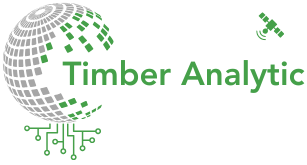

LiDAR Remote Sensing
At EnviPixel, we offer a suite of innovative solutions designed to address the pressing needs of modern forestry, land management, and environmental sustainability. Our Carbon Analytic Tools leverage cutting-edge remote sensing technologies, including LiDAR and AI, to map and monitor aboveground biomass and carbon in both natural and planted forest environments, enabling users to assess carbon stock and dynamics over time. The Timber Analytic Tools focus on precision forestry, providing high-resolution LiDAR data from ground, airborne, and spaceborne platforms to accurately estimate timber volume, enhance forest management practices, and optimize production in fast-growing forest plantations. Our Geo Analytic Tools offer advanced products such as digital terrain models, land use and cover maps, terrain change detection, and topographical analyses, utilizing LiDAR and UAV technologies to deliver precise geospatial insights for land management and environmental monitoring. Finally, our Social Solutions bring together experts and stakeholders from the forestry, remote sensing, and AI sectors by organizing impactful events that foster collaboration, knowledge sharing, and the integration of innovative technologies into sustainable practices. Together, these solutions enable organizations and professionals to make data-driven decisions that contribute to the responsible management of natural resources and the advancement of sustainable development.
The Carbon Analytic Tools utilize in situ measurements, remote sensing from ground-based, airborne, and spaceborne LiDAR platforms, and artificial intelligence to map and monitor aboveground biomass and carbon stocks in both natural and planted forest environments. These tools enable wall-to-wall carbon mapping of large areas, combining cutting-edge mapping methods and sensors, such as NASA's GEDI and ICESat-2, to provide highly accurate and detailed data. Users can access biomass and carbon maps, track changes in carbon stocks over time, analyze carbon balance in specific regions, and export detailed reports. By integrating advanced AI algorithms with state-of-the-art sensors, the Carbon Analytic Tools offer a comprehensive solution for large-scale carbon monitoring and sustainable forest management.

The Timber Analytic Tools are essential for precision forestry, offering advanced capabilities to estimate timber volume in fast-growing forest plantations. These tools utilize high-resolution LiDAR data from both ground-based and airborne platforms, as well as large-area coverage from spaceborne LiDAR, to deliver highly accurate and detailed timber volume estimates. By combining these cutting-edge technologies, the Timber Analytic Tools enable precise monitoring of forest growth, stock levels, and timber production across vast areas. This approach is critical for sustainable forest management, allowing users to optimize harvesting schedules, monitor growth rates, and assess plantation performance with unparalleled accuracy and efficiency.
The Geo Analytic Tools are designed for advanced geospatial analysis, focusing on the creation of high-precision geo-products such as digital terrain models (DTMs), contour maps, orthophotos using UAVs, land use and land cover mapping, and terrain change detection. These tools leverage high-resolution LiDAR data from both airborne and ground-based platforms to enhance the accuracy of topographic products. By integrating LiDAR with cutting-edge geospatial technologies, the Geo Analytic Tools enable detailed analysis of terrain features, land cover changes, and other critical geospatial parameters. This comprehensive approach supports a wide range of applications, from environmental monitoring to urban planning, providing users with reliable, up-to-date geospatial data to inform decision-making and improve land management strategies.
Social Solutions focuses on organizing and facilitating social events within the fields of forestry, remote sensing, and artificial intelligence (AI). These events aim to foster collaboration, innovation, and knowledge exchange among professionals, researchers, and industry leaders. From workshops, conferences, and symposiums to networking meetups and webinars, Social Solutions provides tailored platforms for participants to explore the latest advancements, share research findings, and discuss the future of these interdisciplinary fields. Through engaging sessions and interactive discussions, the solution seeks to bridge gaps between academia, industry, and government agencies, promoting the integration of cutting-edge technologies in forestry and environmental management. Additionally, Social Solutions emphasizes the importance of creating inclusive, diverse, and impactful events that align with current global trends in sustainability, conservation, and technological advancement. By organizing high-quality social events, this solution helps build strong professional networks and accelerates the adoption of new ideas and technologies in forestry and remote sensing.